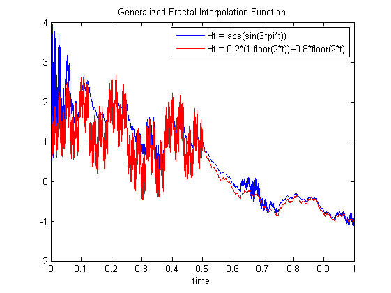

| FRACLAB Functions |
|
Generates Generates a Generalized Fractal Interpolation function with prescribed Holder function based on Iterated Function System
IFS = ifsgfif(N,MI,H)
IFS = ifsgfif(N,MI,H) Generates the generalized fractal interpolation function, IFS, using a sample size, N, 3 interpolation points, arranged as a 3x2 matrix, MI, and Holder function, H. This allows to model a process the pointwise regularity of which varies in time. The parameter N is a positive, power of 2, integer and the parameter MI is real and the parameter H must be a function from R to (0,1), written in a symbolic way.
N = 2048; t = linspace(0,1,N); Mxx = [0 0;0.5 1;1 -1]
H1 = 'abs(sin(3*pi*t))'; H2 = '0.2*(1-floor(2*t))+0.8*floor(2*t)';
x1 = ifsgfif(N,Mxx,H1); x2 = ifsgfif(N,Mxx,H2);
figure; plot(t,x1); hold on; plot(t,x2,'r')
legend('Ht = abs(sin(3*pi*t))','Ht = 0.2*(1-floor(2*t))+0.8*floor(2*t)','Location','NorthEast');
title('Generalized Fractal Interpolation Function'); xlabel('time');

[1] K. Daoudi, J. Levy Vehel and Y. Meyer "Construction of continuous functions with prescribed local regularity", Constructive Approximation, Vol. 014(03) (1998), 349-385.
[2] J. Levy Vehel and K. Daoudi "Generalized IFS for Signal Processing", IEEE DSP Workshop, Loen, Norway, September 1-4, 1996.
| |
ifsfif | ifstfif | |